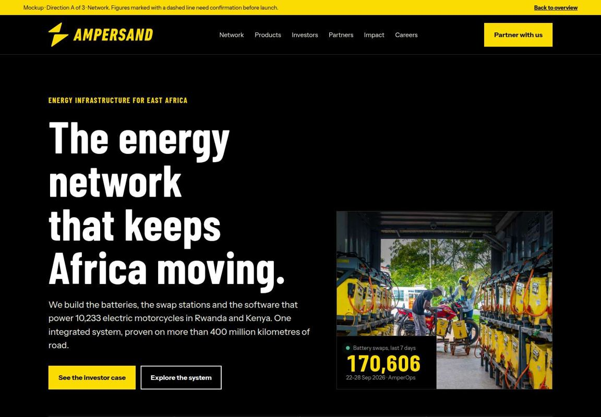
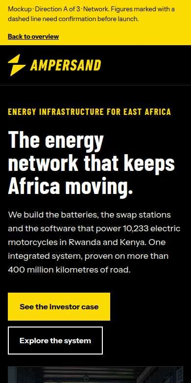

Each direction is a full homepage with a complete products section. All three put the energy network first and speak to investors and partners first. Open each one and compare them.


Direction A
Network
A dark control-room design. Live network numbers and a station board lead the page. Products appear as tabs, one tab for each layer of the system.
Best for: investors and partners who want data first.
A bold yellow poster design, like our station signage. An audience switch changes the hero message. It has product tiles, spec sheets and a fleet savings estimate.
Best for: brand impact and one site that serves all four audiences.
Dashed underlines in the mockups mark data that you must confirm before launch. The list of these items is at the end of this page.
What the current site does not do
The navigation starts with Vehicles. This tells visitors that we are a motorcycle company. The brand book says the battery and the network are the hero.
The products section has only two vehicle pages (Alpha, Wylex) and an empty "Other" page. The page addresses are /alpha, /copy-of-alpha and /copy-of-alpha-1.
The battery, the swap network and AmperOps are not products on the site. They are only in the Technology text.
There are no paths for investors, fleet operators or OEMs. There is no station finder and no price information.
The hero "ENERGIZING THE FUTURE, TODAY." is in capitals and makes no claim that we can prove. The brand book asks for sentence case and data-led claims.
The numbers do not agree. The timeline says "400,000+ battery swaps per week" (Dec 2024). The homepage says 20k swaps per day. AmperOps shows 170,606 swaps in the week of 22–28 Sep 2026.
What similar companies do
I looked at 14 e-moto and battery-swap websites. The table shows the patterns that are most useful for us.
Local positioning, for example "Born in Nairobi. Built for Africa".
No prices, maps or specs. The offer is hidden in a carousel.
Conclusion. No East African competitor has a good station finder, clear energy prices or a real OEM programme page. These are the three places where we can lead. All three directions include an OEM section ("Powered by Ampersand") and a live network section. A station finder and energy prices need more data from the operations team.
Recommended site structure
The same structure is used in all three directions. The products section starts with energy, not vehicles.
Energy
Swap network
AMP 01 battery
AMP 02 battery
AMP XL (coming)
Vehicles
Alpha MK1
Alpha MK2
Wylex Roroship D4000
Powered by Ampersand
Software
AmperOps
Rider app
Swap app
Work with us
Investors
Fleet operators
OEMs
Site and energy partners
Impact
Rider income
Emissions
Rider stories
Company
About and timeline
Leadership
News and media
Careers
Open roles (Breezy)
Support
Find a station
Hotline 1011
Contact
Data in the mockups
I took the network numbers from AmperOps for the week of 22–28 Sep 2026. Other figures come from the current site and from Notion and Drive.
170,606
Swaps in 7 days (Rwanda 139,808, Kenya 30,798)
24,372
Swaps per day, average
70
Public stations (Rwanda 41, Kenya 29)
10,233
Vehicles (Rwanda 7,462, Kenya 2,771)
The station count does not include rescue zones, workshops, HQ pools or recovery points. I did not use revenue data.
Items to confirm before launch
Confirm
AMP naming. The brand book names the batteries AMP_01, AMP_02 and AMP_XL. I assumed that AMP 01 is HM1.9 and AMP 02 is MK2. This is a guess.
Confirm
Alpha MK2 specs. I did not find public specs. The mockups show "TBC". Add the specs from the MK2 release document.
Decide
AMP XL disclosure. The AMP XL memo says R&D only, with no launch in 2026. The mockups show "In development" and no range or cost figures.
Confirm
Energy pricing. "Pay for the charge you use" comes from an internal note that charging is prorated by state of charge. Confirm the public pricing model.
Sign-off
Network numbers. Finance and comms must approve the swap, station and vehicle numbers. Decide if the live numbers come from a cached public feed.
Fix
Current site error. Correct "400,000+ battery swaps per week" on the Who We Are page.
Update
Older claims. "950k km per day", "14k t CO₂e avoided" and "45% income increase" come from the current site. Update them with new data.
Permission
Backers. The mockups show backer names as text. Confirm the list and get permission to use logos.
Photos
Rider quotes. The quotes by Gitwaza, Rukundo and Etienne are from the current Impact page. The photos next to them show other riders. Match each photo to the correct name.
Brand
Logo size on phones. The brand book sets a minimum digital size of 250 px. On phone screens the header logo is 190 px. Confirm if this is acceptable.
Confirm
Proof site data. Most performance numbers come from read-only Metabase queries (swaps_v2, cycles_v2) for 22–28 Sep 2026, because AmperOps timed out. The data team must check the definitions: 98.5% is the average charge at hand-over; the full-charge rate is 88.7% for all packs and 98.9% for AMP 02, but MK2 records only one of its two packs; queue times exist for only 58% (Rwanda) and 34% (Kenya) of swaps; the busiest hour assumes UTC timestamps.
Decide
Battery online rate. Not shown. The newest snapshot is from 16 Aug 2026, it counts retired packs, and the MK2 figure (about 60%) may be a telemetry fault.
Check
AmperOps connector. The detailed AmperOps reports (queue times, charge quality, online rate) timed out during this work. Ask the team that runs the AmperOps server to check it.
Build
Live feed. The "Network now" bar is a simulation from the 7-day average. The real site needs a cached public feed from AmperOps with the same four numbers.
Done
Brand system. The mockups use Instrument Sans and Barlow Condensed, two weights, sentence case, the primary palette and the approved logo files.
Sources of the images
The logos and the "Powered by Ampersand" mark come from Drive: Brand Assets (New 2026) › AmperBrand [SHARE]. I did not change the logo shapes. The white and yellow versions use the approved brand colours.
The photos are Ampersand's own photos, the same set as in the Drive folders ALL Ampersand Media › ALPHA MK1 2025 and Ampersand website. The Drive photo files are 1–9 MB each, and the Drive connector sends files inline. This is too large for this session, so I used the web-size copies from the current site. For the real build, export web versions (about 2,000 px wide, WebP) from Drive.
Next steps
Select one direction, or select parts from different directions.
Send the "Items to confirm" list to product, finance and comms.
Get the station locations and hours from operations for a station finder.
Build the selected direction as a real site with a CMS. The current site uses Wix.